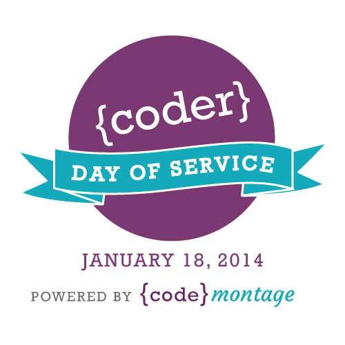

Team Members:
- Colette Ellis - @Coach_Colette
- Carrie Mantione - @carrietech
- Andrew Koontharana
- Cathy Zhang - @cathythemango
- Rachel Susser
- Voltaire Davis - @LiveYourLegends
- Lerna Ekmekcioglu - @lerna_
- Rebecca Krathwohl
Project: It Happen To Me.com
To provide a platform that allows woman and girls to tell their stories.
Mission
To provide a platform that allows women and girls tell their stories.
Notes
Browse or Login Browse: see recent posts or browse by tag Login: with existing account Register: create new account and user name (authentication via Facebook, Twitter, email)
Create your own story (three panels) and (eventually) tag your posts according to categories
Title: Text Box Write your story 3 pre-loaded images represent the three stages of your story
* what happened (voice box)
* how I felt (thought bubble)
* what happened next (question mark)
Other Ideas/Future Add-Ins: Home Page with video to describe how to use the site Drop-down menu to categorize your story Empathetic "like" button Links to resources Voice-recording of story